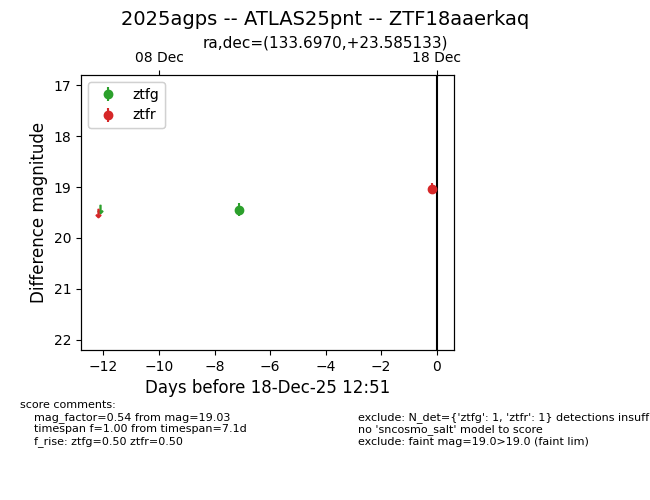
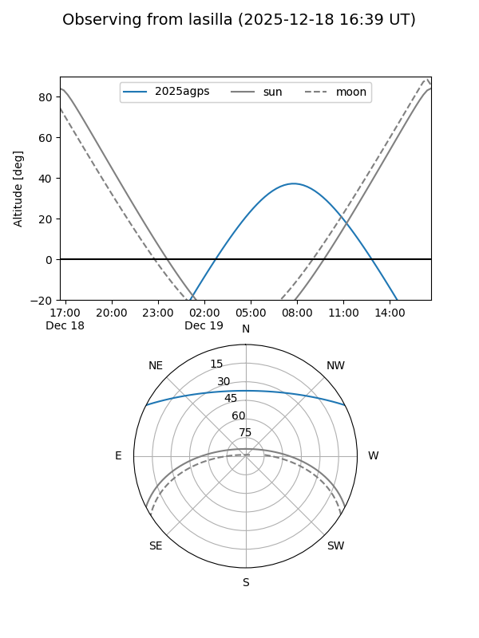
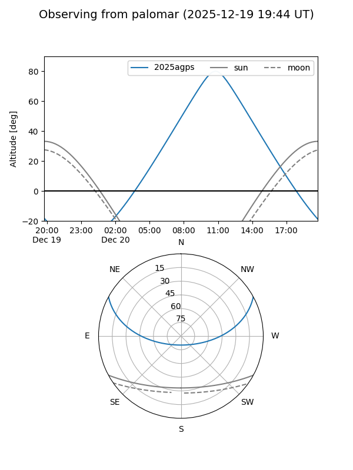
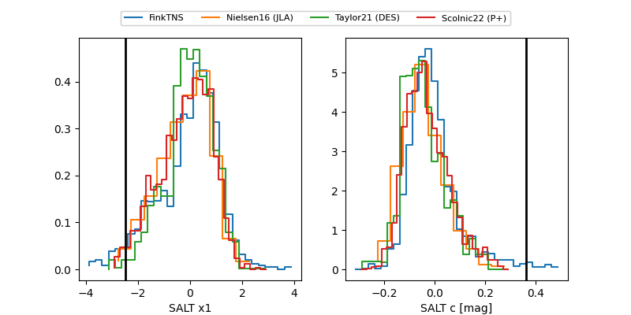

2025agps
Target 2025agps at 2025-12-20 12:09
Aliases and brokers:
FINK: fink-portal.org/ZTF18aaerkaq
Lasair: lasair-ztf.lsst.ac.uk/objects/ZTF18aaerkaq
ALeRCE: alerce.online/object/ZTF18aaerkaq
TNS: wis-tns.org/object/2025agps
YSE: ziggy.ucolick.org/yse/transient_detail/2025agps
alt names
ZTF18aaerkaq (ztf,fink_ztf)
2025agps (tns,yse)
ATLAS25pnt (atlas)
Coordinates:
equatorial (ra, dec) = 133.6970,+23.58513
equatorial (HMS+DMS) = 08:54:47.29,+23:35:06.48
galactic (l, b) = (202.7112,+36.90917)
Flags:
Photometry:
last atlaso=19.24, ztfg=19.43, ztfr=18.83
3 atlaso, 2 ztfg, 2 ztfr detections
Lightcurve

Visibility


Additional plots
